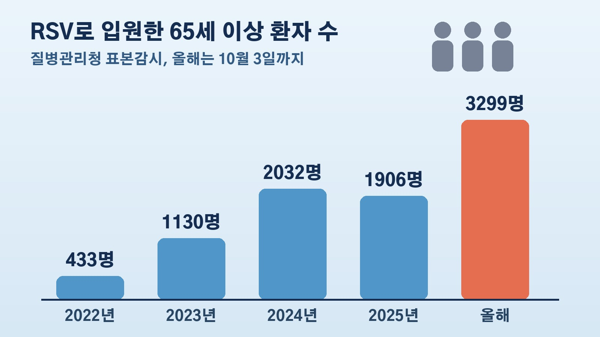

RSV 입원환자 절반이 65세 이상, 10월 3일까지 3299명으로 지난해 한 해 1906명을 넘긴 고령층 호흡기 감염

RSV라고 하면 어린 자녀를 둔 집에서나 걱정하는 아기 감기 정도로 기억하시는 분이 많으실 거예요. 그런데 올해 RSV로 입원한 사람을 나이별로 나눠 보니 65세 이상이 영유아보다 많았습니다. 부모님이 요양병원이나 요양시설에 계시거나, 집에 어르신이 계신 분들이라면 한 번 눈여겨볼 숫자예요. 무엇이 어떻게 달라졌는지 정리해 볼게요.
올해 RSV 입원환자 6706명 중 49.2퍼센트가 65세 이상
국회 보건복지위원회 백종헌 의원이 질병관리청 감염병 표본감시 통계를 받아 19일 공개한 내용이에요. 올해 1월부터 10월 3일까지 RSV로 입원한 65세 이상 환자는 3299명이었습니다. 지난해 한 해 동안 나온 1906명보다 1.7배 많은 숫자를 10월 초에 이미 넘어선 거예요.
전체로 보면 올해 입원환자 6706명 가운데 65세 이상이 3299명으로 49.2퍼센트를 차지했고, 영유아는 2455명으로 36.6퍼센트였어요. 입원환자 두 명 가운데 한 명꼴이 어르신이라는 뜻입니다. 7세에서 64세는 해마다 10퍼센트 안팎에 머물렀어요.
2022년 433명에서 올해 3299명, 몇 년 사이 뒤집힌 구성
불과 몇 년 전만 해도 RSV는 확실히 아이들 병이었어요. 2022년 전체 입원환자 8405명 가운데 영유아가 7553명으로 89.9퍼센트였고, 65세 이상은 433명으로 5.2퍼센트에 그쳤습니다.
그 뒤 65세 이상 입원환자는 2023년 1130명, 2024년 2032명, 2025년 1906명으로 이어지다가 올해 10월 초에 3299명이 됐어요. 반대로 영유아는 2023년 9242명에서 올해 2455명으로 크게 줄었습니다. 영유아 비중은 해마다 낮아져 올해 처음 절반 아래로 내려갔고요.
유행철은 이제 시작, 10월부터 이듬해 3월까지
걱정되는 건 시기예요. RSV는 보통 10월부터 환자가 늘기 시작해 이듬해 3월까지 유행합니다. 올해 고령층 환자 수는 유행철이 본격적으로 시작되기도 전에 지난해 한 해 규모를 넘어선 셈이라, 앞으로 더 늘어날 수 있다는 전망이 나와요.

RSV는 감염된 사람의 기침이나 재채기로 퍼지는 호흡기세포융합바이러스 감염증이에요. 콧물, 기침, 열이 나타나고, 영유아는 세기관지염이나 폐렴으로, 고령층은 폐렴 같은 중증으로 나빠질 수 있습니다. 백 의원은 고령층이 RSV에 걸리면 폐렴과 입원, 사망으로 이어질 위험이 영유아보다 크다고 말했어요.
예방 안내는 아직 보육시설과 산후조리원 중심
문제로 지적된 부분은 방역당국의 안내가 바뀐 흐름을 따라가지 못한다는 점이에요. 질병관리청은 RSV 유행이 예상될 때마다 보도자료로 예방수칙을 알려 왔는데, 그 내용이 영유아 보육시설과 산후조리원에 맞춰져 있었습니다. 입원환자의 절반이 65세 이상인데도 요양병원과 요양시설처럼 어르신들이 함께 지내는 곳에 대한 안내는 부족하다는 지적이에요.
백 의원은 유행 양상이 바뀌었으면 대응 대상도 바뀌어야 한다며, 요양병원과 요양시설까지 포함한 예방 안내 등 고령층 RSV 대책을 서둘러야 한다고 주문했습니다.
우리 집에서 짚어 볼 부분
이번 숫자가 말해 주는 건 RSV를 더 이상 아이들만의 병으로 볼 수 없다는 점이에요. 집에 65세 이상 어르신이 계시거나 부모님이 요양병원, 요양시설에서 지내신다면, 고령층은 폐렴 같은 중증으로 이어질 위험이 크다는 점과 유행철이 10월부터 이듬해 3월까지라는 점을 기억해 두시면 좋겠어요. 질병관리청이 고령층 대상 안내를 따로 내놓는지도 이번 겨울 지켜볼 대목이에요. 숫자는 10월 3일 기준 표본감시 통계라는 점도 함께 알아 두세요.
참고한 기사: 베이비뉴스 2026 국정감사 RSV 입원환자 고령층이 영유아 첫 추월 올해 3299명 2026년 10월 20일, 동아일보 뉴스1 아기들이 걸리는 이 감염병 고령층 입원환자 5년만에 추월 2026년 10월 19일
태그
RSV 호흡기세포융합바이러스 고령층감염병 RSV입원 노인폐렴 요양병원 요양시설 질병관리청 국정감사 겨울호흡기감염